물속 산소량을 높여 생물의 생육 환경을 개선합니다.
미세 기포가 오염물에 침투해 세정 효과를 높입니다.
저수조·양식장 등의 수질 관리에 활용됩니다.
관수용수의 질을 높여 작물 생육을 지원합니다.
음용수·사육수 관리와 악취 저감에 기여합니다.
물리적 세정 효과로 약품 의존도를 낮출 수 있습니다.
전 제품 자체 설계·정밀 가공. 상세 사양서와 단가표는 문의 시 제공해 드립니다.
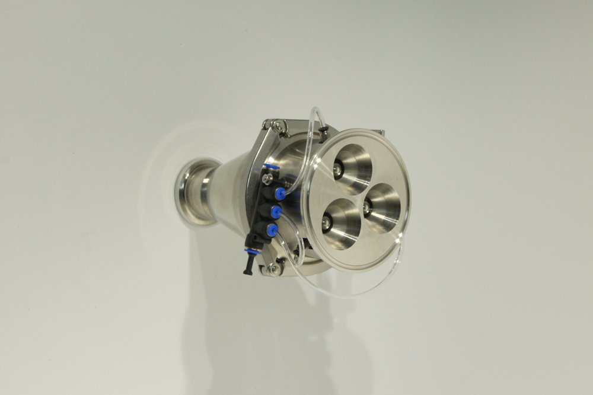
1.5i4T
초미세기포 발생 엔진
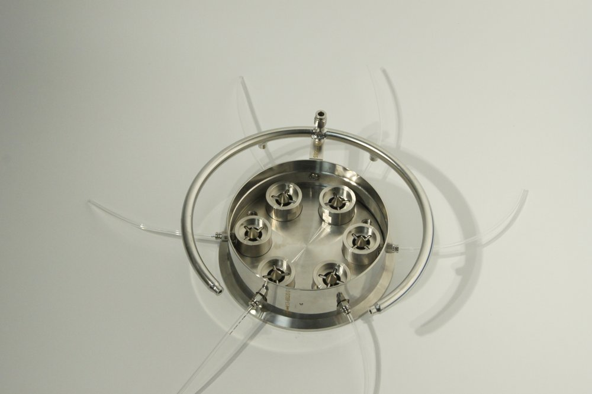
2i8T
초미세기포 발생 엔진

2.5i16T
초미세기포 발생 엔진
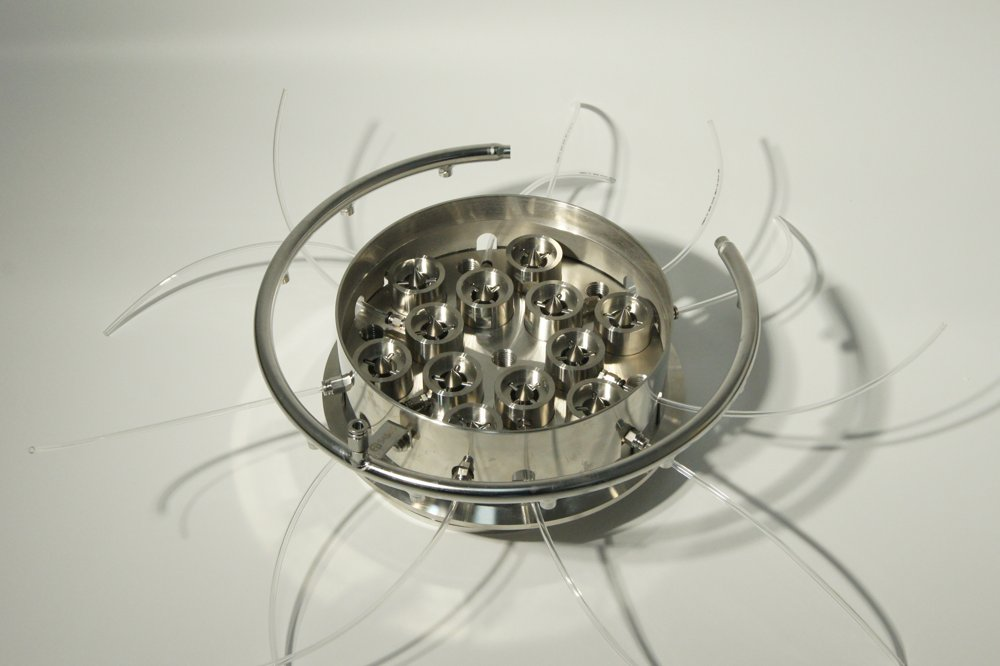
3i28T
초미세기포 발생 엔진

4i40T
초미세기포 발생 엔진
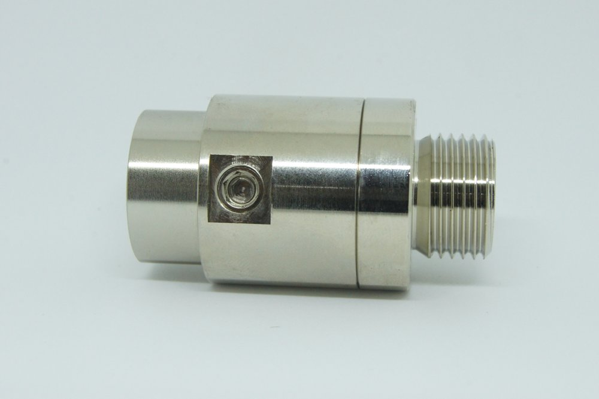
15A5L(BN)
15A 배관 · 황동니켈
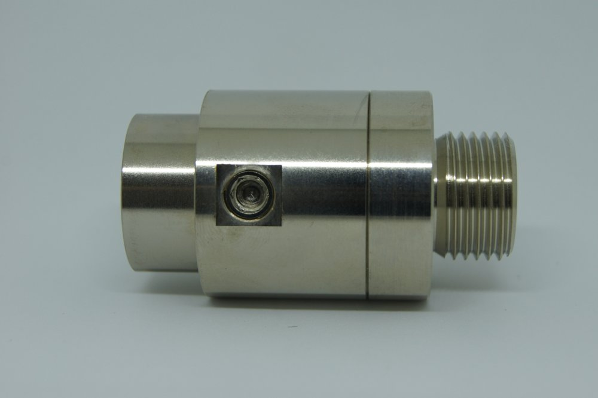
15A8L(BN)
15A 배관 · 황동니켈
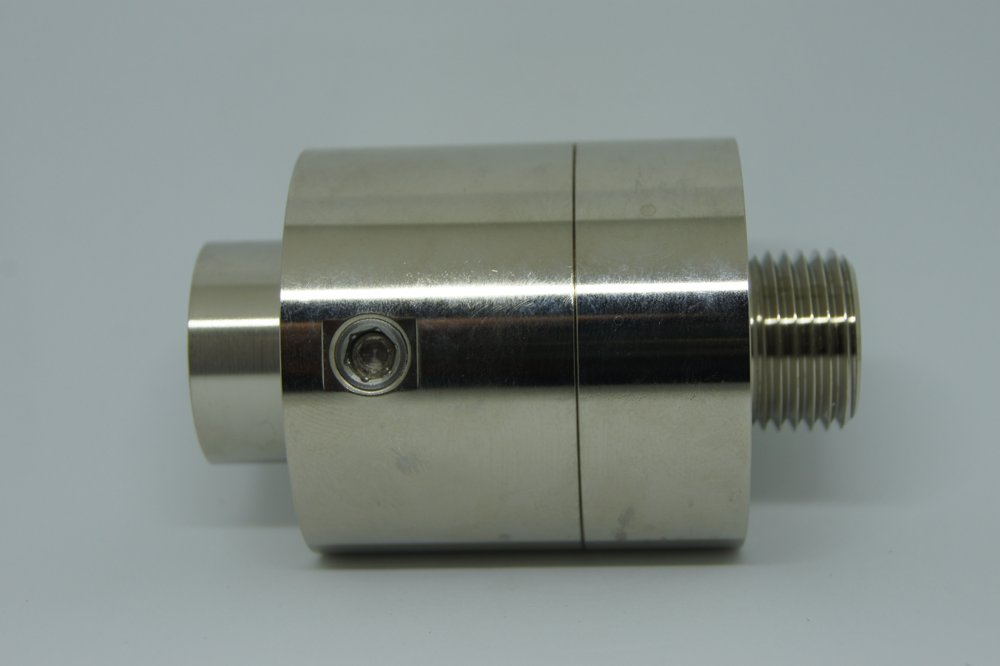
15A10L(BN)
15A 배관 · 황동니켈
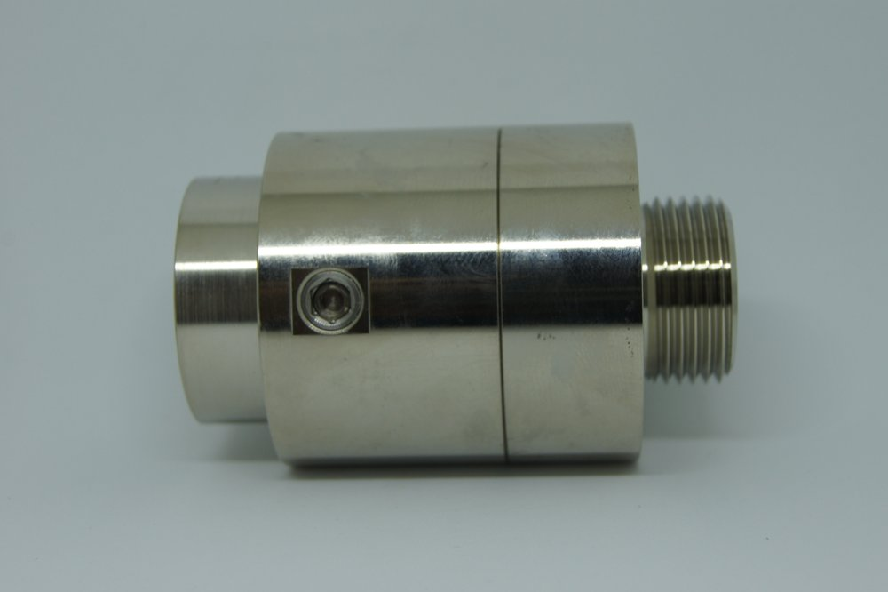
20A20L(BN)
20A 배관 · 황동니켈
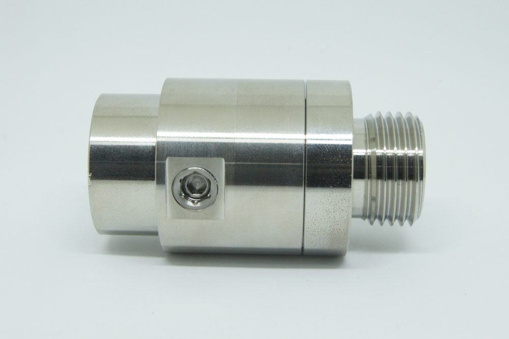
15A5L(S)
15A 배관 · SUS316L
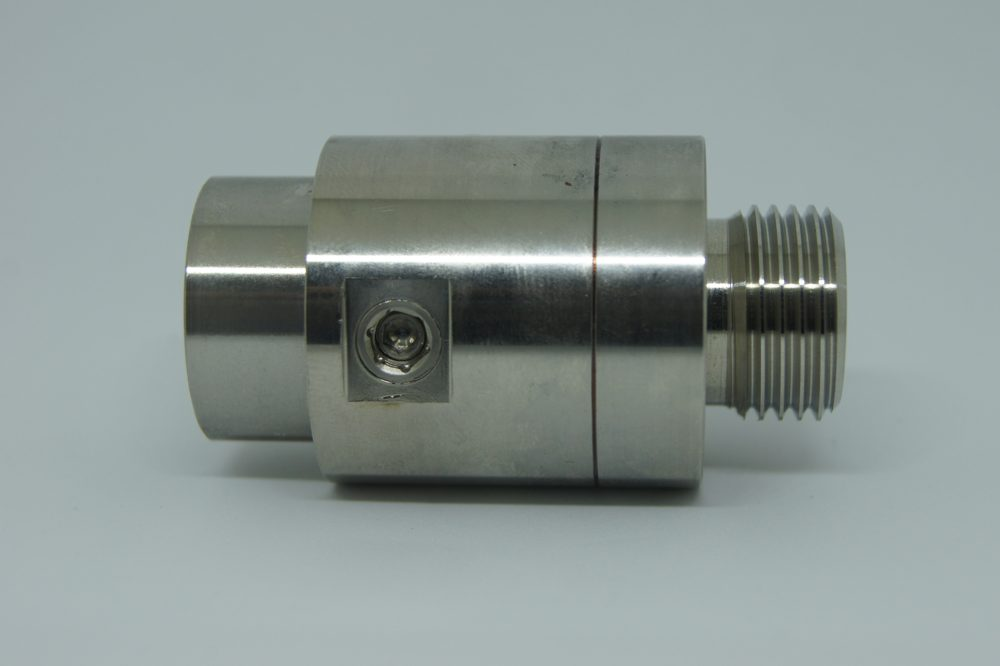
15A8L(S)
15A 배관 · SUS316L

15A10L(S)
15A 배관 · SUS316L
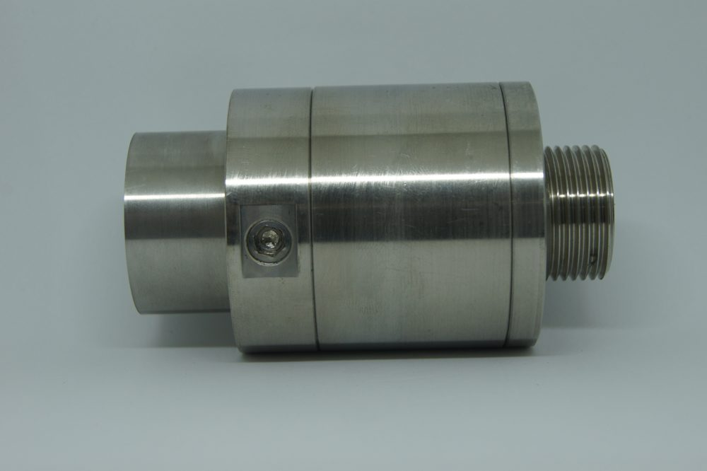
20A20L(S)
20A 배관 · SUS316L

FW24
세면대용 (24mm 규격)
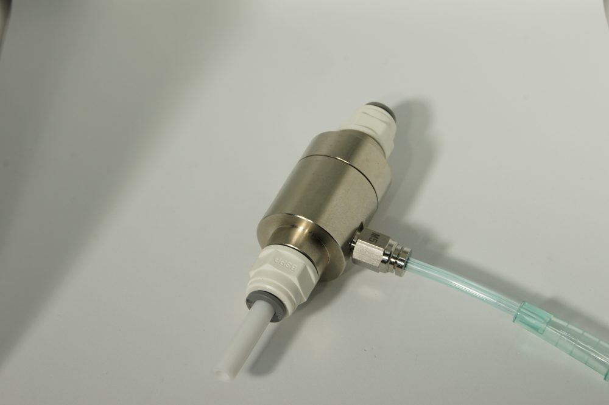
FWP6A
정수기용 인라인 타입
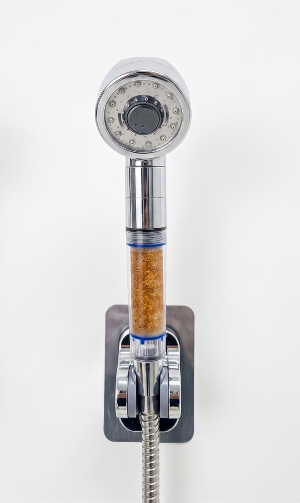
Bubblio
초미세기포 샤워기
노즐·엔진 상세 사양서와 단가표, UFB 샤워헤드 자료를 보내드립니다.
처리 유량, 배관 규격, 사용 목적을 알려주시면 적합한 모델과 적용 방식을 제안해 드립니다. 현장 테스트 지원도 가능합니다.